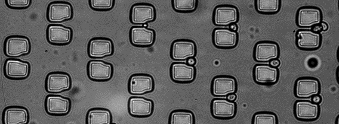

Isolate spores
From sorted populations to individual fungal spores
U-shaped microfluidic traps were developed to capture single spores, support isolated growth and prepare the way for reliable downstream genetic analysis.

Why isolate?
Each colony must originate from one spore
After the sorting step, spores still need to be handled individually. If two colonies grow too close to one another, overlap can compromise the reliability of the subsequent PCR analysis.
The U-shaped trap concept was therefore designed as a low-cost microfluidic approach for single-spore capture, with dimensions compatible with the population expected at the small outlet of DLD 5.
Connect the DLD 5 outlet directly to a single-spore trapping platform to combine enrichment and isolation in a continuous workflow.
Capture performance
Selective capture of individual spores
Across three experimental replicates, the single-spore occupancy rate ranged from 34% to 47%. Although the total occupancy remained below the desired level, most occupied traps contained only one spore.
Only 3–6% of filled traps contained more than one spore. The main limitation was clogging near the first row of traps, which reduced delivery to downstream sites. Adding an inlet filter, similar to that used in the DLD device, was identified as a promising improvement.
On-chip germination
Trapped spores remain viable and can germinate
A nutrient-rich gel was injected at 50 °C after trapping. Images taken immediately and after approximately 72 hours showed germination in regions where the gel remained hydrated, confirming spore viability inside the device.
Growth was slower than under standard Petri-dish conditions, and partial gel evaporation was observed. Improving nutrient availability, humidity retention and device sealing are therefore important next steps.
Towards an integrated workflow